PanicVault 아이폰 안 문서저장(2)
맥엔 iOS 같은 앱별 Touch ID 차단이 없다는 걸 발견했다. 다시 켜지면 유비키라는 별도 객체 조건이 통째로 사라진다 — 결국 맥용은 안 쓰고 DMG 암호화로 가기로 했다.
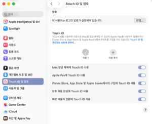
PanicVault 아이폰 안 문서저장(1)
PanicVault에 유비키 Challenge-Response로 잠금을 걸어봤다. 파일을 통째로 훔쳐가도 유비키 없인 오프라인에서 절대 못 푼다는 그 설계가 마음에 든다.
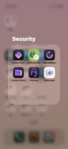
에어갭 노트북(3)
Proton Pass 비밀번호를 GnuPG로 복호화해 KeePassXC로 통째로 이전하고, 이안 콜먼 BIP39 도구로 개인키도 직접 생성해봤다.
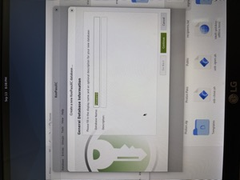
아이폰 서큐리티+프라이버시 앱 추천
메신저부터 드라이브, VPN, 비번관리, 암호화, 라이트닝 지갑까지 — 실제로 홈화면에 자리잡은 보안·프라이버시 앱들을 카테고리별로 정리했다.
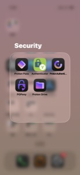
물리적 보안키 - YUBIKEY (final)
1급·2급·3급으로 나눈 개인 기밀정보를 지키는 데 유비키가 해온 모든 역할을 돌아보며, 1~2편으로 끝날 줄 알았던 시리즈를 마친다.

PGPony - 손 위에서 암호화 완결(2)
에어갭 리눅스에서 GnuPG로 마스터키·서브키를 직접 만들고 keytocard로 유비키에 올려, PGPony와 NFC로 연결해 암호화·복호화까지 성공시켰다.
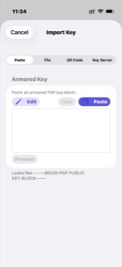
PGPony - 손 위에서 암호화 완결(1)
X 맞팔 유저 글로 알게 된 PGPony. 아이폰 안에서 유비키로 서명·암호화·복호화가 전부 끝난다는 사실에 곧장 설치하고 안전성까지 파고들었다.
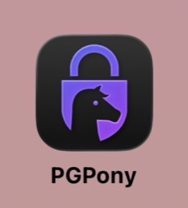
물리적 보안키 - YUBIKEY (4)
아이폰에서 언제든 암호화하고, 복호화는 맥북/리눅스에서만 — age-plugin-yubikey의 공개키 암호화를 웹앱으로 직접 구현하고 실제 하드웨어로 검증까지 마쳤다.
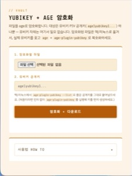
암호화 저장과 한계
NFC 카드, 에어갭 아이폰까지 온갖 방식을 설계하고 부숴본 하루. 결국 답은 프로톤 드라이브 + 에어갭 노트북 + 유비키 age 암호화였다.
프라이버시 웹브라우저
유튜브 광고 제거 때문에 시작했다가 진국에 빠졌다. 기본 트래커 차단부터 오디오 핑거프린팅 방어까지, 브레이브를 쓰는 이유.
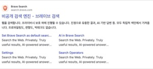
모임 전용 게이트 암호화
실물 카드를 두 번 인증하면 회원만 볼 수 있는 숨겨진 페이지가 열린다. PBKDF2+AES-GCM으로 잠근 초대장, 실제 회원 데이터까지 반영해 완성.
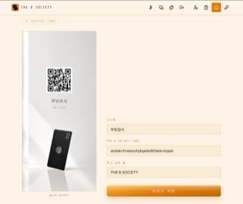
아이폰 앱. 어디까지 믿는가(2)
'데이터가 수집되지 않음' 정말 믿어도 될까? 내 암호화 앱이 RevenueCat과 통신한 걸 발견하고, 파일이 새는 건 아닌지 직접 검증해봤다.
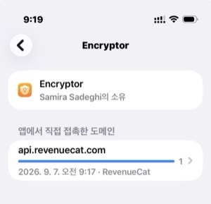
아이폰 앱. 어디까지 믿는가?
앱스토어 통과 = 무조건 신뢰? 놉. '앱 개인정보 보호 리포트'로 직접 확인해보자. 켜지도 않은 쓰레드가 왜 자꾸 접속하는 건지.
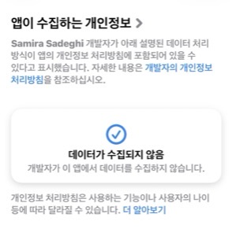
가족 일정관리 웹앱
디스코드 로그인으로 가족만 들어올 수 있게 막아놨다. 다만 깃허브가 털리면 같이 털린다 — 그래서 중요한 문서는 안 담는다. 보안 등급 3등급 정도.
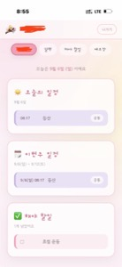
아이패드를 서버로(2)
FTP가 너무 느려서 원인을 캤다. Tailscale Relay와 FTP 프로토콜 한계가 범인. 결국 PocketServer로 갈아타서 진짜 WebDAV 완성.
아이패드를 서버로(1)
놀고 있던 아이패드를 Owlfiles로 WebDAV 서버화. 슬립되면 서버도 잠든다는 걸 발견하고 최소 노출 원칙으로 운영법을 정했다.
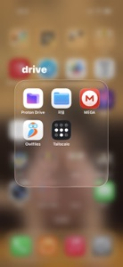
간단 암호화 / 복호화
가족에게 보낼 문서를 웹에서 간단하게 암호화·복호화. 시드 문구 같은 1급 기밀엔 절대 쓰지 말 것 — 편의성 쪽으로 기운 도구.
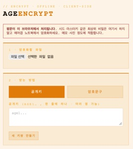
무결성 SD카드
age로 문서 파일을 잠그고, SD카드 자체도 유비키로 통암호화. 이중 잠금이라 타인 손에 들어가도 못 푼다.
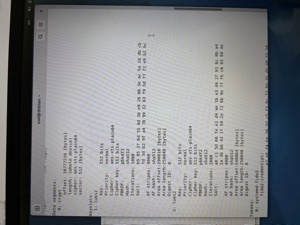
물리적 보안키 - YUBIKEY (3)
유비키로 잠그는 핫월렛을 만들어보려다 실패한 이야기. WebAuthn PRF부터 에어갭, NFC USB까지 파봤지만 결국 보류.
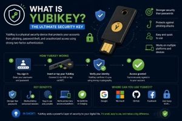
에어갭 노트북(2)
QR SENDER·RECEIVER 완성. 이제 인터넷·블루투스·USB 없이도 두 기기 사이에 파일을 옮길 수 있다. 여전히 단방향.
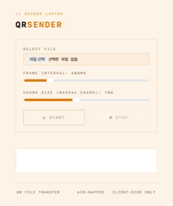
클라우드 서비스
애플 제로데이 사태 이후, 종단간 암호화·분산 저장·유비키까지 겹겹이 쌓아 클라우드를 쓰는 법.

에어갭 노트북(1)
콜드월렛으로 쓰려던 계획을 다크스키피 공격 때문에 접고, 입력은 키보드·카메라, 출력은 화면뿐인 단방향 정보 금고로 만들기까지.

물리적 보안키 - YUBIKEY (2)
age-plugin-yubikey로 문서를 잠그고, 맥OS·리눅스 로그인 자체를 유비키로 걸어서 내 손으로 진짜 에어갭 컴퓨터를 완성한 이야기.

물리적 보안키 - YUBIKEY (1)
지인의 소개로 산 물리적 보안키 유비키. 비번을 알아도 뚫을 수 없는 이유와, 강력한 보안이 주는 소소한 불편함까지.